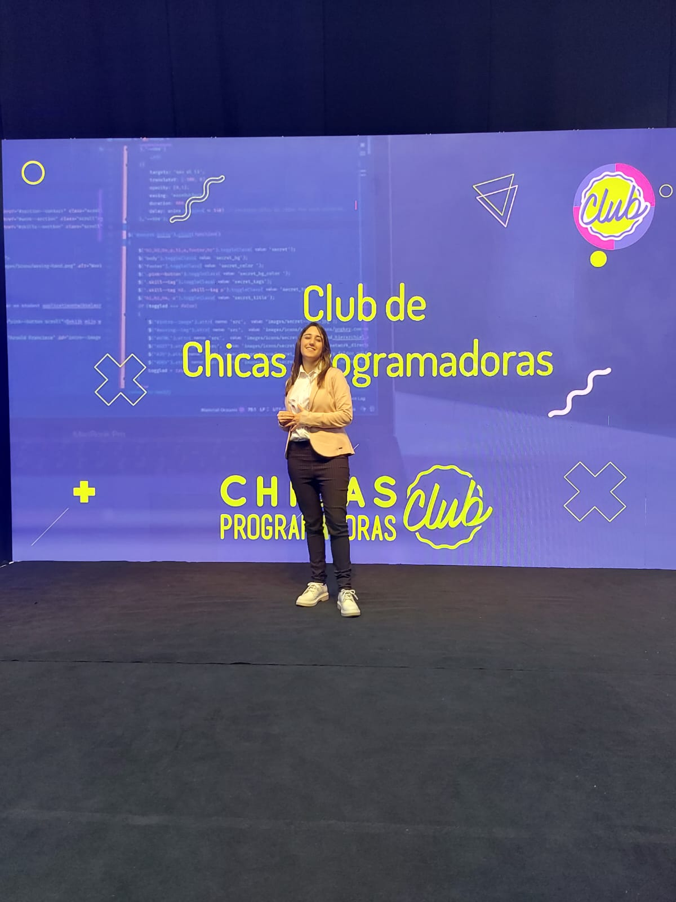

Experience
Coordinator at Club de Chicas Programadoras
- I supervise the implementation of activities and projects in the clubs.
- I lead the coordination of programming clubs in various countries.
- I schedule and facilitate meetings in English to coordinate actions among the clubs.
- I facilitate collaboration with mentors and mentors from the technology industry.
- I develop and manage Google forms, documents, spreadsheets and presentations.
- I implemented automation solutions to optimise repetitive tasks and improve the operational efficiency of the organisation.
- I represent the Club de Chicas Programadoras in corporate events, speaking in public in both Spanish and English and disseminating the organisation's mission to companies and potential collaborators.
- I collaborate in the creation of publicity material and actively participate in media interviews.
- I supervise the enrolment process of students, mentors and referents.



Ambassador Technovation Girls 2024
- As a Technovation Girls Ambassador representing Argentina, I served in the support and guidance of mentees and mentors. Through informative talks and meetings, I solved doubts, provided guidance for the development of mobile application and artificial intelligence projects. I coordinated the teams, ensuring that they met the objectives set out in the Technovation curriculum.
- I led meetings in English with the Technovation Girls team from the US and Canada to share progress.
- The Technovation Girls project aims to work in teams of 2-5 people to program mobile applications or an artificial intelligence project that address real-world problems. This was the first time it was implemented in Argentina and in conjunction with the Club de Chicas Programadoras in the Junior division for girls aged 13 to 15 years old living in our country.
- I was nominated for the Global Ambassador Leadership Award 2024 for my work in the programme.
- Five teams in my charge reached the quarter finals and one of them, FlameHearts, won in the ‘Social Impact’ category in this global competition.